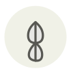

Feuille de combava
Makrut lime leaf
| Nom latin | Citrus hystrix |
|---|---|
| Famille | Herbes |
| Origine | Asie du Sud-Est |
| Saison | Toute l’année |
| Goût | Agrumes · Floral · Frais · Résineux |
| Prix courant | 10–20 €/100 g |
Ce que c’est
La feuille pousse en double lobe caractéristique, comme deux feuilles jointes bout à bout. Elle porte bien plus de parfum que le fruit, bosselé, sec et presque sans jus — ici toute la valeur de l’arbre est dans le feuillage.
En cuisine
Déchirez la feuille le long de la nervure centrale avant de l’ajouter. Entière et intacte elle ne libère presque rien.
S’accorde avec
Citronnelle Lait de coco Galanga Piment Nuoc-mâm Citron vert Coriandre Gingembre
Même espèce
Bergamote Cédrat confit Chenpi (écorce de mandarine séchée) Cédrat Citron de Menton Combava
Entre aussi avec
Krachai (gingembre digité) Noix de kluwak Feuille de curcuma Zédoaire
Une erreur ici, ou un oubli ? Dites-le nous